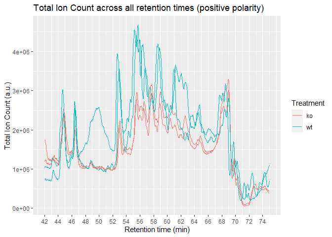
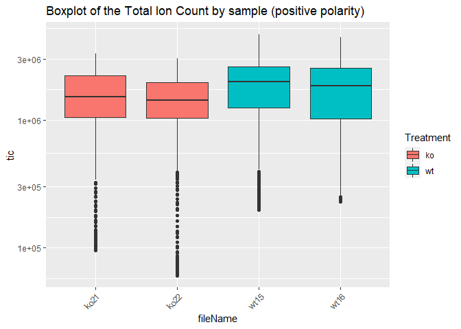
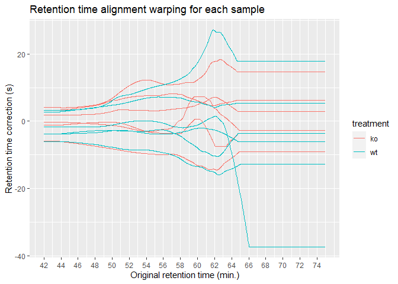
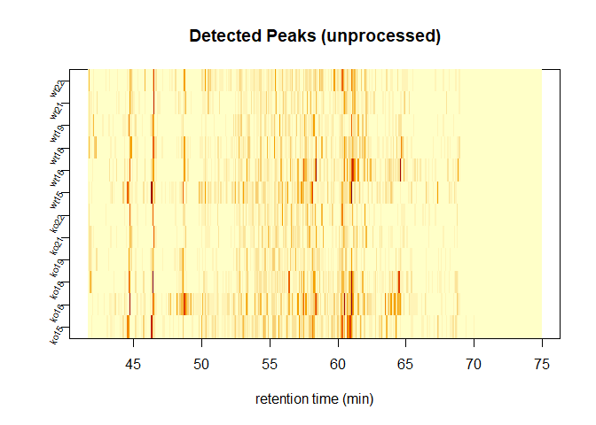
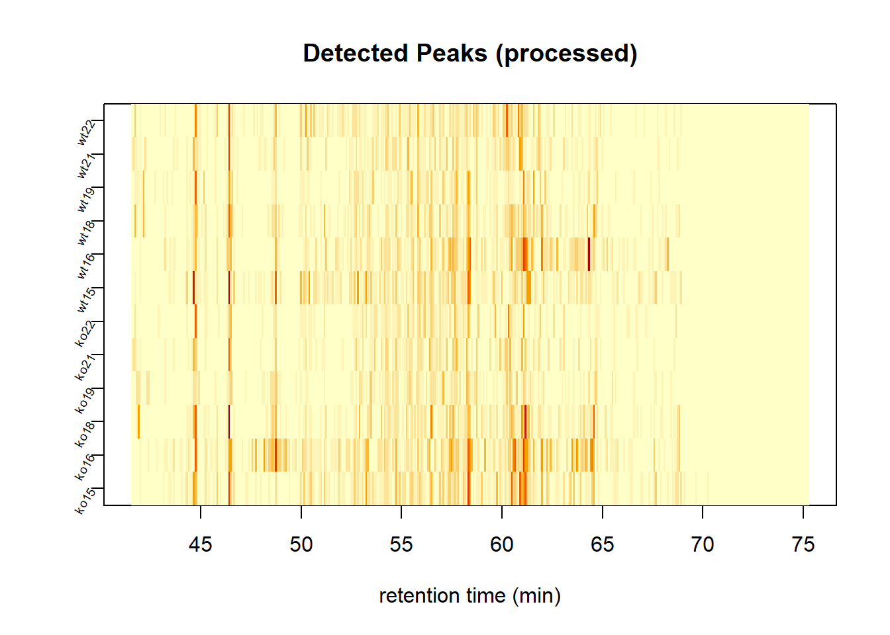

Introduction to AlpsLCMS
Institute for Bioengineering of Catalonia
2020-10-27
introduction-to-alpslcms.RmdThe AlpsLCMS package was written with two purposes in mind:
- to help data analysts and LC-MS scientists to work with LC-MS samples.
- to help IT pipeline builders implement automated methods for preprocessing.
Functions from this package written for data analysts and LC-MS scientists are prefixed with lcms_, while higher level functions written for IT pipeline builders are prefixed with pipe_. The main reason why all exported functions have a prefix is to make it easy for the user to discover the functions from the package. By typing lcms_ RStudio will return the list of exported functions. In the R terminal, lcms_ followed by the tab key (⇥) twice will have the same effect. Other popular packages, follow similar approaches (e.g: forcats: fct_*, stringr: str_*).
This vignette is written for the first group. It assumes some prior basic knowledge of LC-MS and data analysis, as well as some basic R programming. In case you are interested in building pipelines with this package, you may want to open the file saved in this directory (run it on your computer):
pipeline_example <- system.file("pipeline-rmd", "pipeline_example.R", package = "AlpsLCMS")
print(pipeline_example)NODE 1: Data wrangling
Convert RAW to mzXML
First, we need the listed spectra in “.mzXML” format to create the lcms_dataset. We can manually convert “.raw” into “.mzXML” using RawConverter or ProteoWizard externally and saved them within the same input directory. We set the polarity manually.
Code to run
# Be careful setting the mode to "onDisk" when you apply this function.
dataset <- readMSData(path, mode = "onDisk")
#> Polarity can not be extracted from netCDF files, please set manually the polarity with the 'polarity' method.
dataset@featureData@data[["polarity"]] <- rep(polarity, length(dataset@featureData@data[["polarity"]]))
head(dataset)
#> MSn experiment data ("OnDiskMSnExp")
#> Object size in memory: 0.03 Mb
#> - - - Spectra data - - -
#> MS level(s): 1
#> Number of spectra: 6
#> MSn retention times: 41:41 - 41:49 minutes
#> - - - Processing information - - -
#> Data loaded [Tue Oct 27 15:59:23 2020]
#> MSnbase version: 2.10.1
#> - - - Meta data - - -
#> phenoData
#> rowNames: ko15.CDF
#> varLabels: sampleNames
#> varMetadata: labelDescription
#> Loaded from:
#> ko15.CDF
#> protocolData: none
#> featureData
#> featureNames: F01.S0001 F01.S0002 ... F01.S0006 (6 total)
#> fvarLabels: fileIdx spIdx ... spectrum (31 total)
#> fvarMetadata: labelDescription
#> experimentData: use 'experimentData(object)'NODE 2: Append metadata
To merge the metadata, an Excel o CSV file is required, containing the first column (called “sampleNames”) with the same name of the LC-MS files, ending with the format (e.g. Sample1.mzXML).
It requires a column (called “treatment”) with the class sample. Ensure you have this specific colname “treatment”.
Caution with metadata. The use of characters such as “-”, “/”, " " (space) and starting with numbers, etc. leads to problems. Therefore, the function replace [\\\"\\s/\\\\,;.:|#@$%&?!*%+-=><^'(){}\\[\\]]+ by _. Beware of using other special characters and change them by usual ASCII characters.
Code to run
dataset <- lcms_meta_add(dataset, metadata, by = "sampleNames")
phData(dataset)
#> sampleNames treatment
#> 1 ko15.CDF ko
#> 2 ko16.CDF ko
#> 3 ko18.CDF ko
#> 4 ko19.CDF ko
#> 5 ko21.CDF ko
#> 6 ko22.CDF ko
#> 7 wt15.CDF wt
#> 8 wt16.CDF wt
#> 9 wt18.CDF wt
#> 10 wt19.CDF wt
#> 11 wt21.CDF wt
#> 12 wt22.CDF wtNODE 3: Total ion chromatogram
tics <- lcms_tics(dataset, treatment = "treatment")
lcms_plot_tics(tics,
treatment = treatment,
plot_type = "spec")
#> Warning: Removed 144 row(s) containing missing values (geom_path).

NODE 4: Filtering
Filter by retention time / m/z
For coherence with the pipeline, time is measured in minutes. XCMS and IPO packages work in seconds by default, while CAMERA and MAIT in minutes. Under the hood, the still do in this way, but we preset all our results in minutes.
NODE 5: Data Preprocessing - XCMS
It includes:
- Peak Detection
- Retention Time Correction
- Peak Correspondence
- Imputation
Parameters can be changed here. After manual inspection of certain compounds that we know that they should naturally appear, such as plotting leucine and isoleucine (as we are using plasma samples), we can set parameters more accurally.
Input
prep_parm_p <- NULL
prep_parm_p$peakwidth <- c(20, 80)
prep_parm_p$noise <- 5000
prep_parm_p$snthresh <- 3
prep_parm_p$prefilter <- c(6, 5000)
prep_parm_p$centerSample <- "wMean"
prep_parm_p$integrate <- 2
prep_parm_p$mzdiff <- -0.001
prep_parm_p$profStep <- 0.005
prep_parm_p$minFraction <- 0.2
prep_parm_p$ppm <- 25
prep_parm_p$mzCenterFun <- "wMean"
prep_parm_p$fitgauss <- FALSE
prep_parm_p$verbose.columns <- FALSE
classes <- dataset@phenoData@data[["treatment"]]Peak detection
Our standard method for peak detection is ‘CentWave’, since the data provided is Centroided. We must initialize its parameters according to the IPO Package optimization. Peak detection aims to detect important features (peaks) on the chromatographic axis. This will be useful for a posterior peak alignment on the chormatophic axis.
Code to run
peakdet = lcms_find_chrom_peaks_cwp(dataset,
params = prep_parm_p)
#>
#> Finding chromatographic peaks using the optimized set of parameters obtained from IPO package.
message("Number of detected peaks")
#> Number of detected peaks
peakdet@msFeatureData[["chromPeakData"]]@nrows
#> [1] 7952
message("")
#>
message("Parameters")
#> Parameters
peakdet@.processHistory[[1]]@param
#> Object of class: CentWaveParam
#> Parameters:
#> ppm: 25
#> peakwidth: 20, 80
#> snthresh: 3
#> prefilter: 6, 5000
#> mzCenterFun: wMean
#> integrate: 2
#> mzdiff: -0.001
#> fitgauss: FALSE
#> noise: 5000
#> verboseColumns: FALSE
#> roiList length: 0
#> firstBaselineCheck TRUE
#> roiScales length: 0
xcms::plotChromPeakImage(peakdet)
Retention Time Correction and Peak Correspondence
Peak correspondence is carried out by the ‘groupChromPeaks’ method, with parameters obtained form IPO. Peak Correspondece consist in grouping peaks on retention time axis with the purspose of associate them to spectra on the mass/chage axis. After this stage we finally have a peak table.
It requires a previous grouping.
Correspondence, Alignment and Regrouping
Alignment and regrouping
pgp <- PeakGroupsParam(minFraction = 0.8,
extraPeaks = 1,
smooth = "loess",
span = 0.4,
family = "gaussian")
## Get the peak groups that would be used for alignment.
xdata_aling <- adjustRtime(peakgrouped, param = pgp)
#> Performing retention time correction using 47 peak groups.
#> Applying retention time adjustment to the identified chromatographic peaks ... OK
rt_plot = lcms_retention_time_alignment_plot(xdata_aling)
rt_plot
#> Warning: Removed 144 row(s) containing missing values (geom_path).
## REGROUPING
new_params <- PeakDensityParam(sampleGroups = classes,
bw = 30, #
minFraction = 0.4)
peakgrouped = groupChromPeaks(xdata_aling, param = new_params)
#> Processing 3196 mz slices ... OKImage plot of the chromatographic detected peaks per sample before retention time alignment and grouping:
lcms_plot_chrom_peak_image(peakdet, binSize = 5,
xlim = NULL,
log = FALSE,
xlab = "retention time (min)",
yaxt = par("yaxt"),
main = "Detected Peaks (unprocessed)")
lcms_plot_chrom_peak_image(peakgrouped, binSize = 5,
xlim = NULL,
log = FALSE,
xlab = "retention time (min)",
yaxt = par("yaxt"),
main = "Detected Peaks (processed)")
Imputation
Finally, in the imputation stage, we integrate the areas of the missing peaks of the peak table that were not detected in the previous steps of the signal preprocessing workflow. This stage is important to make easier statistical and machine learnig posterior stages.
message("Missing values found in the processed dataset: ", sum(is.na(featureValues(peakgrouped))))
#> Missing values found in the processed dataset: 1841
peakgrouped_imp <- lcms_fill_chrom_peaks(peakgrouped)
#>
#> Imputing missing peaks of the peak table.
cat("Imputing values...\n")
#> Imputing values...
message("Missing values found after fill_chrom_peaks: ", sum(is.na(featureValues(peakgrouped_imp))))
#> Missing values found after fill_chrom_peaks: 166NODE 8: Feature table
The XCMS function featureValues creates a intensity matrix with all the features. However, since this is untargeted metabolomics, the colnames are composed by FT1, FT2, FT3… (FT = feature) and each feature needs to be explored with the feature definition function (info for mass and rt) once a feature is significantly different by groups.
Merging into a Feature Table
xdata = featureValues(peakgrouped_imp,
method = "maxint",
value = "into",
filled = TRUE,
missing = "rowmin_half")
xdata= t(xdata)
feature=featureDefinitions(peakgrouped_imp)
feature=feature@listData
featNames=paste0(feature$mzmed,"_",feature$rtmed)
colnames(xdata)=featNames
message("Missing values in the feature table: ",
sum(is.na(xdata)))
#> Missing values in the feature table: 0NODE 9: Data reduction
Input

sr <- 0.5
#List of adducts for do.findmain
#adducts_list = c("[M+H-H2O]+")
adducts_list = c()
## Building the defineExperiment manually
## Change for your convenience (e.g. GC-MS)
value <- c(rep("fill", 4), "LC-MS")
design <- as.data.frame(value)
rownme <- c("Experiment", "Species", "Sample",
"Contributer", "platform")
rownames(design) <- rownme
value <- c(rep("fill", 13), "1")
instrument <- as.data.frame(value)
rownm <- c("chrominst", "msinst", "column",
"solvA", "solvB", "CE1", "CE2",
"mstype", "msmode", "ionization",
"colgas", "msscanrange", "conevol",
"MSlevs")
rownames(instrument) <- rownm
Experiment <- list(design = design, instrument = instrument)Code to run
RC <- RAMClustR::ramclustR(xcmsObj = peakgrouped_imp,
featdelim = ".",
st = st,
sr = sr,
ExpDes = Experiment,
normalize = "TIC",
sampNameCol = 1,
fftempdir = getwd())
#> organizing dataset
#> normalizing dataset
#> calculating ramclustR similarity: nblocks = 1
#> 1
#> RAMClust feature similarity matrix calculated and stored:
#> RAMClust distances converted to distance object
#> fastcluster based clustering complete
#> dynamicTreeCut based pruning complete
#> RAMClust has condensed 525 features into 109 spectra
#> collapsing feature into spectral signal intensities
#> writing msp formatted spectra
#> msp file complete
RC <- RAMClustR::do.findmain(RC,
nls = adducts_list,
mode = "positive",
mzabs.error = 0.005,
ppm.error = 5,
writeMat = FALSE,
writeMS = FALSE)
#> 10 of 109
#> 20 of 109
#> 30 of 109
#> 40 of 109
#> 50 of 109
#> 60 of 109
#> 70 of 109
#> 80 of 109
#> 90 of 109
#> 100 of 109
#> plotting findmain annotation results
#> finished# Selection of max intensity ion as cluster representative
Max_int<- lapply(RC$M.ann, function(x) x[which.max(x$int), ])
Representative_ions <- dplyr::bind_rows(Max_int)
Representative_ions$name <- paste(round(Representative_ions$mz,4),
round(RC$clrt,2),
sep = "_")
# Adducts of representative ions
Representative_adducts <- sapply(RC$M.ann, function(x) x[which.max(x$int), ]$adduct)
# Selection of labeled max intensity ion as cluster representative
Labeled_int <- lapply(RC$M.ann, function(x) {
xl <- x[which(!is.na(x$label)), ]
xl[which.max(xl$int), ]
})
Labeled_ions <- dplyr::bind_rows(Labeled_int)
# We save most important cluster data
cluster_data <- data.frame(cluster = RC$ann, Max_int_ion_mz = Representative_ions$mz, Max_int_ion_adduct = Representative_adducts, labeled_ion_mz = Labeled_ions$mz, labeled_ion_adduct = Labeled_ions$label, RC_mz = RC$M, retention_time = RC$clrt)
# All labeled ions
All_labeled_adducts <- lapply(RC$M.ann, function(x) {
xl <- x[which(!is.na(x$label)), ]
})
All_labeled_adducts <- dplyr::bind_rows(All_labeled_adducts)mz %in% Representative_ions$mz %>% table()
#> .
#> FALSE TRUE
#> 513 12
message("length of features: ", length(mz))
#> length of features: 525mdataImputed <- as.matrix(xdataImputed)
# Clustered features
xdata_cluster_ions <- mdataImputed[, mz %in% Representative_ions$mz]
# Singletons
clustered_mz<- lapply(RC$M.ann,
function (x) x$mz) %>%
unlist() %>%
as.numeric()
message("A number of ",
length(clustered_mz),
" features have been clustered into ",
dim(xdata_cluster_ions)[2],
" representative features")
#> A number of 317 features have been clustered into 12 representative features
mdataImputed <- as.data.frame(mdataImputed)
xdata_cluster_ions <- as.data.frame(xdata_cluster_ions)
singletons <- mdataImputed[,!mz %in% clustered_mz]
message("A number of ",
RC$nsing,
" features correspond to singletons")
#> A number of 208 features correspond to singletons#Combine singletons and molecular ions
xdata_reduced <- cbind.data.frame(xdata_cluster_ions, singletons)
message("Original dataset has ",
ncol(mdataImputed),
" features")
#> Original dataset has 525 features
message("")
#>
message("Cluster representative ions dataset has ", ncol(xdata_cluster_ions),
" features")
#> Cluster representative ions dataset has 12 features
message("")
#>
message("Singletons dataset has ", ncol(singletons), " features")
#> Singletons dataset has 494 features
message("")
#>
message("Reduced dataset has ", ncol(xdata_reduced), " features")
#> Reduced dataset has 506 features
message("")
#> Model
#> Warning in wilcox.test.default(x = c(ko15.CDF = 149469.692965517, ko16.CDF =
#> 34776.6475000001, : cannot compute exact p-value with ties
#> Warning in wilcox.test.default(x = c(ko15.CDF = 74949.7277647054, ko16.CDF =
#> 1712607.242, : cannot compute exact p-value with ties
#> Warning in wilcox.test.default(x = c(ko15.CDF = 52692.8685652169, ko16.CDF =
#> 264208.005611114, : cannot compute exact p-value with ties
#> Warning in wilcox.test.default(x = c(ko15.CDF = 644218.408947367, ko16.CDF =
#> 738819.992785718, : cannot compute exact p-value with ties
#> Warning in wilcox.test.default(x = c(ko15.CDF = 249307.773428571, ko16.CDF =
#> 339477.464270272, : cannot compute exact p-value with ties
#> Warning in wilcox.test.default(x = c(ko15.CDF = 19195.5121629565, ko16.CDF =
#> 4825.98841706919, : cannot compute exact p-value with ties
#> Warning in wilcox.test.default(x = c(ko15.CDF = 860.061812917071, ko16.CDF =
#> 1675351.28000003, : cannot compute exact p-value with ties
#> Warning in wilcox.test.default(x = c(ko15.CDF = 8340.51025530303, ko16.CDF =
#> 1786114.9128889, : cannot compute exact p-value with ties
#> Warning in wilcox.test.default(x = c(ko15.CDF = 2056.08446741879, ko16.CDF =
#> 2148576.59858824, : cannot compute exact p-value with ties
#> Warning in wilcox.test.default(x = c(ko15.CDF = 6600.2784496801, ko16.CDF =
#> 730497.326823537, : cannot compute exact p-value with ties
#> Warning in wilcox.test.default(x = c(ko15.CDF = 5398.21722869392, ko16.CDF =
#> 591023.677200004, : cannot compute exact p-value with ties
#> Warning in wilcox.test.default(x = c(ko15.CDF = 2413.41358976665, ko16.CDF =
#> 294707.34857143, : cannot compute exact p-value with ties
#> Warning in wilcox.test.default(x = c(ko15.CDF = 66280.9420909089, ko16.CDF =
#> 247646.232045452, : cannot compute exact p-value with ties
#> Warning in wilcox.test.default(x = c(ko15.CDF = 296797.555, ko16.CDF =
#> 145485.623199999, : cannot compute exact p-value with ties
#> Warning in wilcox.test.default(x = c(ko15.CDF = 34049.7049999998, ko16.CDF =
#> 34049.7049999998, : cannot compute exact p-value with ties
#> Warning in wilcox.test.default(x = c(ko15.CDF = 674.614624999989, ko16.CDF =
#> 99423.1985714261, : cannot compute exact p-value with ties
#> Warning in wilcox.test.default(x = c(ko15.CDF = 397476.207857141, ko16.CDF =
#> 85016.7935384618, : cannot compute exact p-value with ties
#> Warning in wilcox.test.default(x = c(ko15.CDF = 416789.072761899, ko16.CDF =
#> 215015.350000003, : cannot compute exact p-value with ties
#> Warning in wilcox.test.default(x = c(ko15.CDF = 1718.14936272445, ko16.CDF =
#> 13281.6971636578, : cannot compute exact p-value with ties
#> Warning in wilcox.test.default(x = c(ko15.CDF = 17412.74819575, ko16.CDF =
#> 11924.0051504973, : cannot compute exact p-value with ties
#> Warning in wilcox.test.default(x = c(ko15.CDF = 28619.196, ko16.CDF =
#> 443612.604545453, : cannot compute exact p-value with ties
#> Warning in wilcox.test.default(x = c(ko15.CDF = 167843.120000001, ko16.CDF =
#> 16685.6224659292, : cannot compute exact p-value with ties
#> Warning in wilcox.test.default(x = c(ko15.CDF = 108495.147272727, ko16.CDF =
#> 96206.5246666678, : cannot compute exact p-value with ties
#> Warning in wilcox.test.default(x = c(ko15.CDF = 1209.16748203519, ko16.CDF =
#> 664881.168000003, : cannot compute exact p-value with ties
#> Warning in wilcox.test.default(x = c(ko15.CDF = 552.911438103612, ko16.CDF =
#> 210353.133176469, : cannot compute exact p-value with ties
#> Warning in wilcox.test.default(x = c(ko15.CDF = 235.271600089588, ko16.CDF =
#> 399571.735764703, : cannot compute exact p-value with ties
#> Warning in wilcox.test.default(x = c(ko15.CDF = 397.558145102662, ko16.CDF =
#> 123005.324933332, : cannot compute exact p-value with ties
#> Warning in wilcox.test.default(x = c(ko15.CDF = 455.569255965981, ko16.CDF =
#> 174710.340000001, : cannot compute exact p-value with ties
#> Warning in wilcox.test.default(x = c(ko15.CDF = 6031655.11619057, ko16.CDF =
#> 216442.120421053, : cannot compute exact p-value with ties
#> Min. 1st Qu. Median Mean 3rd Qu. Max.
#> 0.002165 0.309524 0.588745 0.567469 0.818182 1.000000
#>
#> Number of features < 0.05 nominal p-value 40
#> [1] 0.002164502 0.002164502 0.002164502 0.002164502 0.002164502 0.002164502
#>
#> Number of features fdr-corrected p value of < 0.05 is 26Univariate anotation
# We use the selected vips
univ_feat <- result[result$fdr.wilcox < 0.05,"id"]
# Untargeted assignation
# Creating mz column
mzr <- univ_feat %>%
stringr::str_split(.,"\\_") %>%
lapply(.,function(x) x[1]) %>%
unlist() %>%
as.numeric()
all.equal(length(univ_feat), length(mzr))
#> [1] TRUE
tdata_reduced_univ <- data.frame(mz = mzr)
if(dim(tdata_reduced_univ)[1]>0){
result_POS_HMDB_univ <- assignation_pos_HMDB(tdata_reduced_univ)
head(result_POS_HMDB_univ)
} else {
message("There is no significant features in Wilcox test")
}
#> mz HMDB
#> 1 298.2 <NA>
#> 2 300.2 <NA>
#> 3 301.2 <NA>
#> 4 302.2 <NA>
#> 5 322.1 HMDB12143
#> 6 324.2 <NA>
#> Assignation
#> 1 <NA>
#> 2 <NA>
#> 3 <NA>
#> 4 <NA>
#> 5 2-Amino-4-oxo-4-alpha-hydroxy-6-(erythro-1',2',3'-trihydroxypropyl)-5,6,7,8-tetrahydroxypterin
#> 6 <NA>anotation of all features positive
# Untargeted assignation
# Creating mz column
mzr <- colnames(as.matrix(xdataImputed)) %>%
stringr::str_split(.,"\\_") %>%
lapply(.,function(x) x[1]) %>%
unlist() %>%
as.numeric()
all.equal(dim(xdataImputed)[2], length(mzr))
#> [1] TRUE
tdata_reduced_all_features <- data.frame(mz = mzr)
result_POS_HMDB_all_features <- assignation_pos_HMDB(tdata_reduced_all_features)
head(result_POS_HMDB_all_features)
#> mz HMDB Assignation
#> 1 200.1 <NA> <NA>
#> 2 205.0 <NA> <NA>
#> 3 206.0 <NA> <NA>
#> 4 207.1 <NA> <NA>
#> 5 219.1 <NA> <NA>
#> 6 231.0 <NA> <NA>